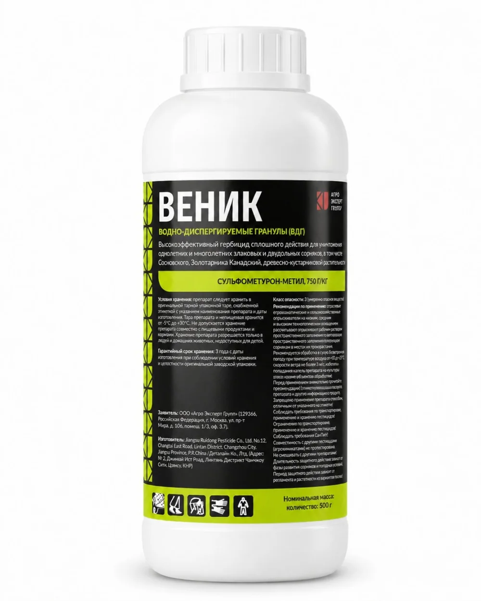
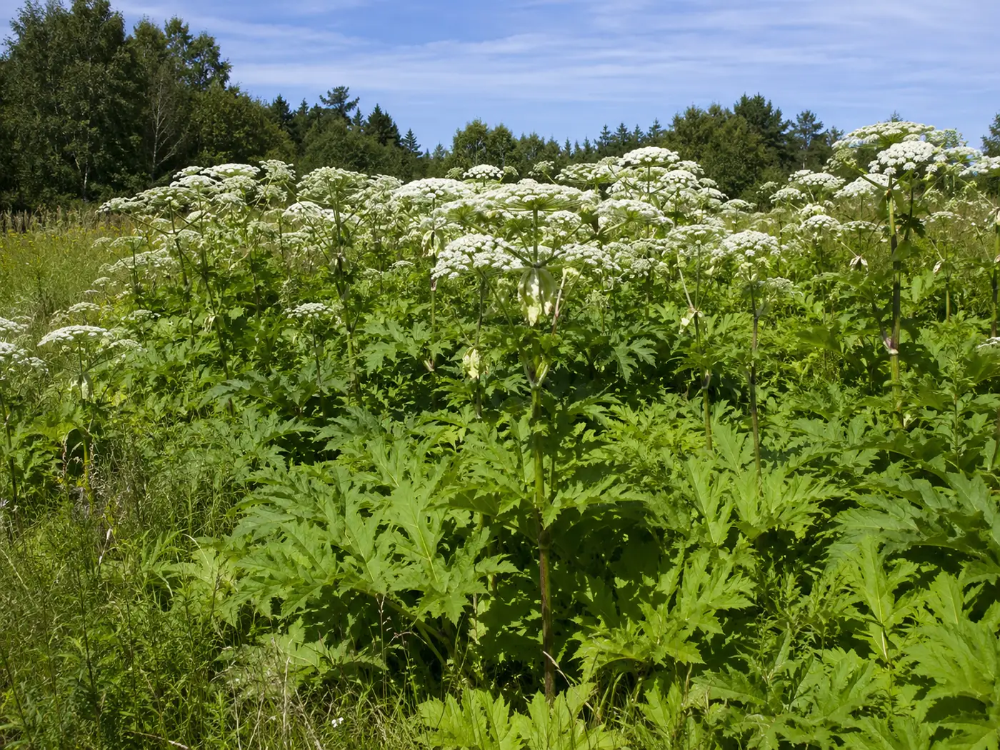
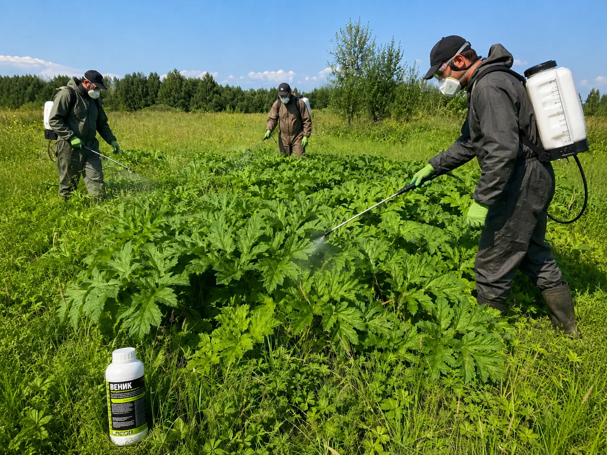
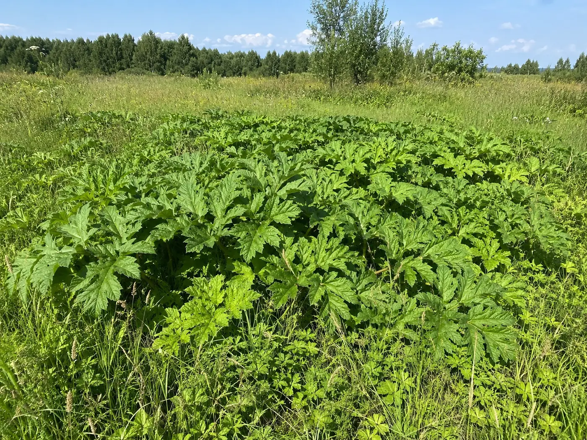
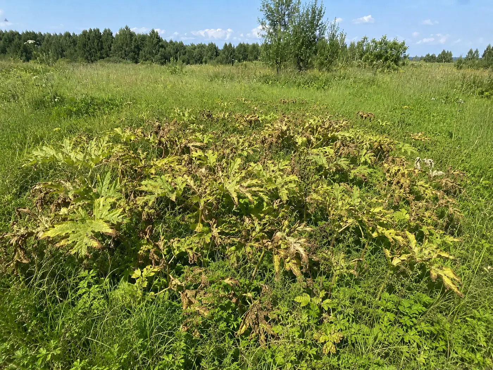

ВЕНИК, ВДГ — зарегистрированный гербицид сплошного действия против борщевика, золотарника Канадского и другой нежелательной растительности на землях несельскохозяйственного пользования.

Препарат применяется на землях несельскохозяйственного пользования вне населенных пунктов и в населённых пунктах — строго в пределах официального регламента.
Механическое удаление уменьшает надземную массу, но само по себе не устраняет причины повторного зарастания.

После скашивания борщевик способен формировать новые побеги, поэтому работы приходится повторять.
Семенной запас становится источником новых всходов и возвращает проблему на уже очищенный участок.
Сок борщевика повышает чувствительность кожи к солнечному свету и может вызывать тяжёлые ожоги.
Препарат применяют по почве и вегетирующим сорнякам при их высоте до 30 см. Конкретную норму выбирают в пределах зарегистрированного диапазона.

Учитываем площадь, высоту и состав сорной растительности, сроки обработки и особенности объекта.
Норма составляет 0,12–0,35 кг/га. Отгрузка — флаконами по 0,5 кг.
Рабочий раствор наносят на почву и сорняки с соблюдением тарной этикетки и требований безопасности.
Гербицид сплошного действия уничтожает не только борщевик. Не применяйте его там, где требуется сохранить растительность.
Сведения приведены по Государственному реестру средств защиты растений и удобрений Республики Беларусь.
Фото сделаны с одной точки. Препарат действует системно: пожелтение и усыхание развиваются постепенно и охватывают растение целиком, включая корневую систему.


Калькулятор использует максимальную норму 0,35 кг/га и округляет количество вверх до целых флаконов по 0,5 кг.
Окончательную норму определяют по регламенту с учётом состояния объекта.
Цена и наличие подтверждаются в коммерческом предложении.
Сообщаете площадь, тип объекта и контактные данные.
Мы уточняем норму, количество флаконов и стоимость партии.
Направляем коммерческое предложение, счёт и документы на препарат.
Согласовываем сроки, способ получения и комплект документов.
Для предварительного расчёта достаточно площади участка. Для точной рекомендации дополнительно уточним тип объекта и состояние растительности. Быстрее всего — в Telegram: менеджер отвечает в чате в рабочее время.
+375 29 656-52-52